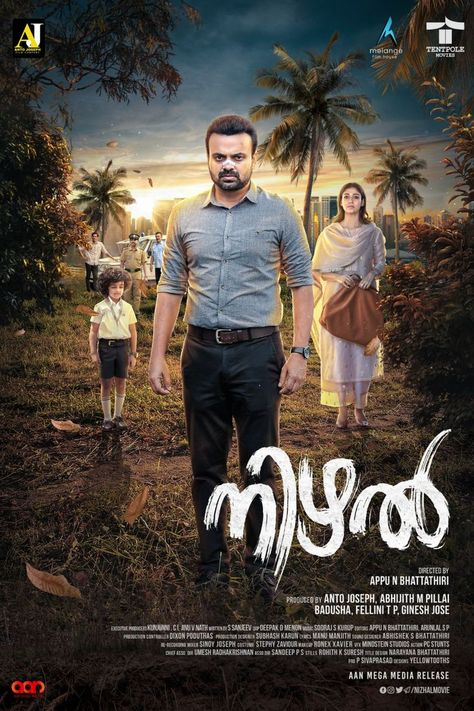
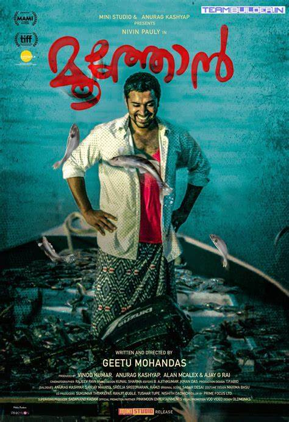
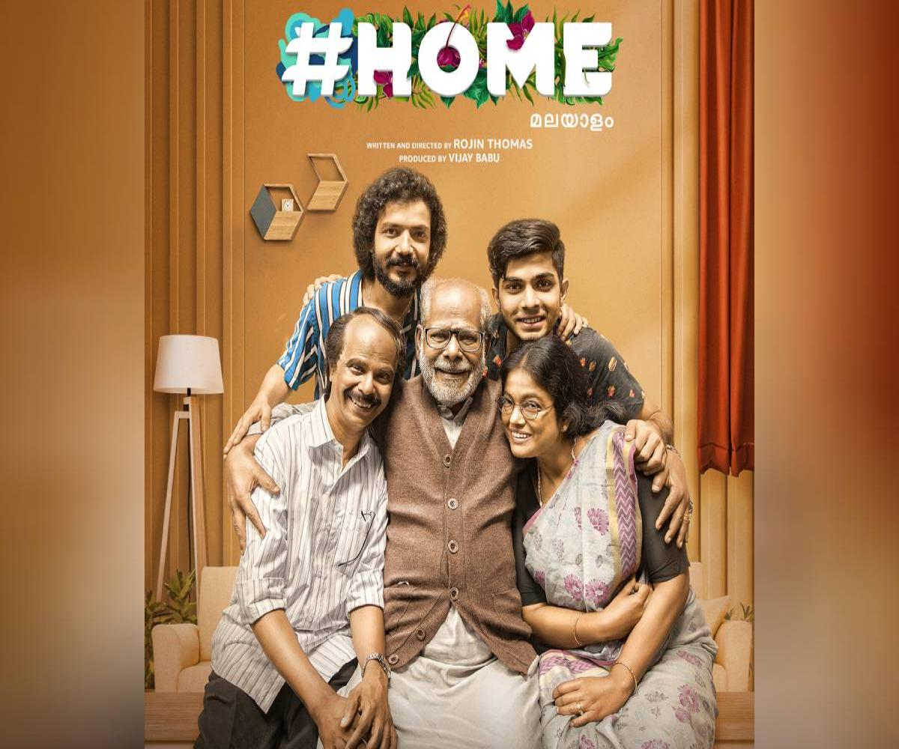

NIZHAL
Nizhal (transl. Shadow) is a 2021 Indian mystery thriller film directed by Appu N. Bhattathiri in his debut and written by S. Sanjeev. It stars Kunchacko Boban and Nayanthara in lead roles.
Release Date.21 August 2016
Director:Mahesh Narayanan
Rating IMDb: 8.8/10

MOOTHON
Moothon (transl. The Elder One),[1] also known internationally as The Elder One,[2] is a 2019 Indian Malayalam-language drama film[3][4] written and directed by Geetu Mohandas
Release Date:22 july 2021
Director: Geetu Mohandas
Rating IMDb: 8.8/10

HOME
Home (stylised as #Home) is an Indian Malayalam-language drama film directed and written by Rojin Thomas.[2] The film stars Indrans, Sreenath Bhasi, Manju Pillai, Naslen K. Gafoor, Johny Antony, and Kai
Release Date:22 june 2021
Director: Rojin Thomas
Rating IMDb: 8.8/10

THE PERSUIT OF MY HAPPINESS
The Pursuit of Happyness is a 2006 American biographical drama film directed by Gabriele Muccino and starring Will Smith co-stars, making his film debut as Gardner's son
Release Date:22 june 2006
Director: Gabriele Muccino
Rating IMDb: 8/10